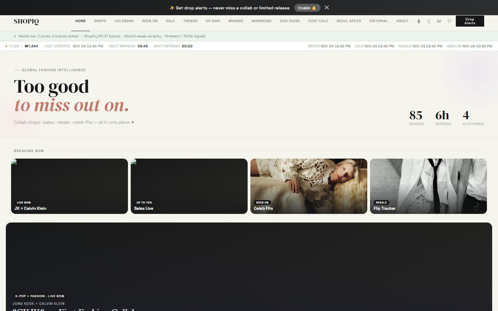

정해진 방법이 없으면 기준부터 분석하고,
필요한 도구가 없으면 직접 만듭니다.
공주교육대학교 수학교육과 재학. 흩어진 정보를 모아 구조화하고, 생성형 AI로 도구와 콘텐츠를 만들어 끝까지 실행한 작업들입니다.
SHOPIQ — 흩어진 해외 브랜드 정보를 한 화면으로
개인 프로젝트2026.06 · 생성형 AI 협업으로 기획·구현 · HTML/JS



- 문제
자주 가는 해외 브랜드의 세일·드롭·콜라보 정보가 사이트마다 흩어져 있어, 매번 여러 곳을 돌며 확인해야 했습니다.
- 구조화
정보를 드롭 · 세일 · 리셀 · 셀럽 착용 · 트렌드로 나누고, 국내 배송 가능 여부와 내 사이즈 필터를 기준으로 정리했습니다.
- 데이터
Shopify 공식몰의 상품 데이터에서 정가 대비 할인가를 비교해 20% 이상 세일을 자동 추출하고, Reddit 소비자 반응·SNS 트렌드를 연결하는 구조를 설계했습니다.
- 의사결정 지원
같은 상품을 공식몰 직배송·편집숍·배송대행으로 살 때 관세·부가세·배송비를 합친 원화 총액을 비교하는 계산기를 만들었습니다.
- 품질 관리
이미지 출처를 전수 점검해 추정 URL 35건 이상을 공식 소스로 교체하고, 오래된 정보가 남지 않도록 갱신 규칙을 코드로 명문화했습니다.
「똑똑! 수학탐험대」 숏폼 공모전 우수상
수상2026 · 교육부·KERIS 주최 · 예비교원 부문 · 개인 출품 · 77초
- 기준 분석
심사 배점(서비스 이해 35 · 현장 연계 35 · 메시지 20 · 완성도 10)을 분해해, 비중이 큰 현장 연계성을 영상의 중심 구간으로 배치했습니다.
- 메시지
타깃인 학부모가 한 번에 이해하도록 "게임인 줄 알았는데, 수학이었다" 한 문장으로 정리하고, 게임 예고편처럼 시작해 반전으로 끝나는 구조를 짰습니다.
- 실행
영상 생성 AI, AI 음성, 코드 기반 모션그래픽, 실제 서비스 화면 녹화를 조합해 혼자 제작했습니다.
- 제약 해결
AI 정책상 아동을 생성할 수 없는 문제는 동물 캐릭터로 바꿔 해결하고, 사용한 AI 도구를 모두 기록해 활용 내역서로 제출했습니다.
AI 다큐멘터리 〈확률론의 시초와 통계학〉
과제2026.11 · 수학의 역사 수업 발표 상영작 · 10분 30초
- 기획
교재 내용을 바탕으로 파스칼·페르마의 편지에서 현대 통계학까지 이어지는 한 편의 이야기로 대본을 구성했습니다.
- 제작
장면별 프롬프트를 설계해 영상 생성 AI로 시대 장면을 만들고, 내레이션·자막·인포그래픽을 직접 편집했습니다.
- 반복 개선
검토하며 장면 중복, 너무 짧은 컷, 문맥이 끊기는 문단, 자막과 겹치는 그래픽을 하나씩 찾아 고쳤습니다. 최소 컷 길이 같은 기준을 정해 전체에 적용했습니다.
- 결과
상영 제한 용량(300MB)에 맞춰 화질을 유지하며 압축해 최종본을 납품했습니다.
불편을 발견하면 도구로 바꿉니다
생성형 AI로 기획·구현해 실제로 쓰고 있는 도구들입니다. 바로 열어 써 볼 수 있습니다.